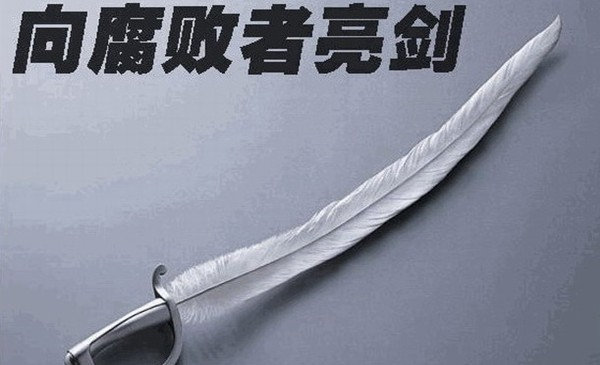

Conversation with 81184027 at Sun 27 Apr 2014 12:59:51 PM CST on 154115835 (webqq)
(12:59:55 PM) 481386421: 祖传三代庸医，第一代是头疼医头，脚疼医脚。虽然去不了病根儿，但起码能减轻症状，让你自以为治好了。第二代是头疼医脸，脚疼也医脸，因为对他们来说，医好医不好不要紧，面子最重要。第三代更邪乎，头疼堵嘴，脚疼也堵嘴…
(12:59:55 PM) 上善若水: 祖传三代庸医，第一代是头疼医头，脚疼医脚。虽然去不了病根儿，但起码能减轻症状，让你自以为治好了。第二代是头疼医脸，脚疼也医脸，因为对他们来说，医好医不好不要紧，面子最重要。第三代更邪乎，头疼堵嘴，脚疼也堵嘴…
(01:04:20 PM) 醒悟: :face13:共党啊
(01:57:59 PM) 阿赑: 路说~
(01:58:22 PM) 阿赑: 乱说 明明是土匪 你竟敢美化土匪！
(01:58:32 PM) 阿赑: 拉出去斩了
(02:51:38 PM) 福建-福州&水浒: ???
(04:20:07 PM) 这一季的花开过后: 汗，今天代表村里去发放每季度的养老钱。七十岁以上每季度150，八十岁以上每季度300.当我把这村里从集体收入中拿出的300块钱交到那个老女人手里时，这货说了句感谢神，我说要感谢党感谢村支书，那货和那货的女儿说了句，那也是神给与的，没有天地就没有万物。当时我气的，差点把钱从她手里抢回来
(04:31:33 PM) 阿赑: 说真的 全能多多少少给了一部分人一个目标 一个理念
XX党 妈的 让人很迷茫 不知道做什么 房子 医疗 教育 新三座大山
(04:32:28 PM) 阿赑: 我从来不感谢党 我付出了 我也纳税了~
(04:39:03 PM) 这一季的花开过后: 因噎废食总是不可取，一个那么大的党，其中难免有些蛀虫，但是少数人代表不了绝大多数。
(04:41:07 PM) 这一季的花开过后: 也有羡慕国外的民主和多党制的，但显然他们不了解中国国情。中国共产党诚然有些需要改进的地方，但谁能担保换做其他政党执政，人民就能更加有幸福感。
(04:42:17 PM) 憧憬￠未来: 不是换政党，是人民手中有随时换掉不合格政党的权利
(04:42:29 PM) 这一季的花开过后: 一个人尚且不能成为完人，一个政党也必然需要不断的学习和改进。
(04:42:51 PM) 憧憬￠未来: 你让一个老虎少吃点肉改吃素？
(04:43:19 PM) 这一季的花开过后: 你我不过是人民中的十几亿分之一。我们毕竟只能代表自己。
(04:43:27 PM) 广东-深圳&漂流: 做惯了奴才，让做主人倒不习惯了
(04:43:41 PM) 憧憬￠未来: 但是，宪法规定的选票，我没投过
(04:43:49 PM) 憧憬￠未来: 你投过？
(04:44:34 PM) 憧憬￠未来: 看来你也被某派洗脑了
(04:44:46 PM) 广东-深圳&漂流: 
(04:45:05 PM) 广东-深圳&漂流: 明亡之后真的是无华夏，都成顺民了
(04:45:08 PM) 这一季的花开过后: 不是换政党，是人民手中有随时换掉不合格政党的权利
你让一个老虎少吃点肉改吃素？
你是说，作为羊有选择被狼吃还是被虎吃的权利？
(04:45:20 PM) 憧憬￠未来: 有时候想，全能神洗脑，教徒们算邪教徒，那些也被洗脑了的呢？
(04:46:19 PM) 这一季的花开过后: 无党派人士是伟大的，因为他们可以反对一切。
(04:48:15 PM) 这一季的花开过后: 显然，全能是有政治野心的，如果现在给你一个决定权，你是选择共产党继续执政，还是愿意给全能一个试试看的机会？
(04:48:17 PM) 憧憬￠未来: 错～三只老虎，我们是羊群～如果我们有权利选择放那一只出来，出来多长时间可以出来，比如，放一只，其他的饿着，那么，它们自我会控制，只吃正常死亡的羊，但是只有一只狮子，没有控制，它会想吃小的吃小的，想咬死几只不吃也行。
(04:49:33 PM) 憧憬￠未来: 你在问我前面有一堆食物和一堆稀屎一堆干屎，我喜欢吃稀屎还是干屎？
(04:49:39 PM) 这一季的花开过后: 或者你现在推荐一个目前已知的或是未来可以预期出现的合格的真正为民的政党，我也愿意投它一票。
(04:49:51 PM) 憧憬￠未来: 两臭选一臭？
(04:50:44 PM) 憧憬￠未来: 目前有么？
(04:50:49 PM) 这一季的花开过后: 我在请你给出一个你已经知道的而我还不知道的合格的政党。
(04:51:12 PM) 憧憬￠未来: 对一年三季的人我争论什么，我晕～～
(04:52:16 PM) 广东-深圳&漂流: 共产党让你搞出来另外一个政党？？？
(04:52:24 PM) 憧憬￠未来: 60多年了，一直养一只老虎，其他老虎早饿死了，现在说，如果你可以选，选哪个？
(04:52:33 PM) 憧憬￠未来: 楼上正解
(04:52:49 PM) 憧憬￠未来: 我不说了，浪费时间～一年三季哈
(04:53:12 PM) 这一季的花开过后: 那你就勉强认可60分万岁好了。共产党将存在并将长期存在好长一段时间。
(04:53:30 PM) 这一季的花开过后: 可以改国籍什么的。
(04:53:32 PM) 广东-深圳&漂流: 69周岁，到时候看吧
(04:54:45 PM) 这一季的花开过后: 一个政党和一个人一样，80%的人说它是好的，那它就是好的。
(04:54:47 PM) 广东-深圳&漂流: 苏联没有撑过
(04:55:00 PM) 广东-深圳&漂流: 有80%人说是好的吗
(04:55:01 PM) 广东-深圳&漂流: 草
(04:55:19 PM) 这一季的花开过后: 60%
(04:55:29 PM) 广东-深圳&漂流: 国家统计局统计的吗
(04:55:30 PM) 广东-深圳&漂流: 我日
(04:56:38 PM) 广东-深圳&漂流: 人大代表谁选的知道不？？
(04:56:58 PM) 这一季的花开过后: 不需要统计，如果有40%的人对这个政党强烈不满，就会爆发社会动乱，那这个政党就会易主江山。
(04:57:20 PM) 憧憬￠未来: 朝鲜～他的国家永远是80%满足感
(04:57:22 PM) 广东-深圳&漂流:  我发现你比阿娇还阿娇
我发现你比阿娇还阿娇
(04:57:40 PM) 憧憬￠未来: 20%的人在监狱
(04:57:40 PM) 广西-柳州&小何: 我也满足了
(04:57:52 PM) 广东-深圳&漂流: 我也很幸福
(04:58:16 PM) 广东-深圳&漂流: 看看非洲那些落后的黑人，我感到万分幸福
(04:58:31 PM) 这一季的花开过后: 我不是愚忠，只是请问邪教的最大特点是什么？
(04:58:37 PM) 广东-深圳&漂流: 跟美帝国主义的人民比起来，我更幸福，他们需要我们去解放
(04:59:05 PM) 这一季的花开过后: 那就是推翻大红龙的政权。
(04:59:28 PM) 广西-柳州&小何: 推翻你来管？
(04:59:30 PM) 憧憬￠未来: 朝鲜人们都很幸福～～猪圈里养的猪被杀之前也很幸福
(05:00:35 PM) 这一季的花开过后: 让，不再漂和憧憬，他俩执政。我看好。
(05:20:23 PM) 广东-深圳&漂流:
(05:20:43 PM) 阿赑: 这辈子狗变的？
(05:20:58 PM) 阿赑: 这个鞭子 怎么感觉想狗尾巴？
(05:27:05 PM) 这一季的花开过后: :wipe:
(05:32:59 PM) 这一季的花开过后: 都吃饭去了吗？
(05:34:45 PM) 阿赑: :D
(05:34:55 PM) 广东-深圳&漂流:
(05:35:23 PM) 这一季的花开过后: 漂哥，你肿么了
(05:37:45 PM) 这一季的花开过后: 是我的错吗？我道歉，这血吐得----
(05:37:56 PM) 归家的小羔羊: http://www.fuyin.tv/index.php/content/window/urlid/35682/movid/2395/vom/v#4680909-sqq-1-63910-5964d6860be91dc156661fb7624bb8a0
(05:37:56 PM) 归家的小羔羊: 认识上帝的途径之一，不过读圣经是最直接的方法。
(05:39:15 PM) 这一季的花开过后: 顾客就是上帝，我一般都到商场去认识上帝。:)
(05:40:23 PM) 归家的小羔羊: 电影【圣经故事】
(05:41:13 PM) 归家的小羔羊: 嗯，看看会有收获:)
(05:50:33 PM) 这一季的花开过后: http://user.qzone.qq.com/1014049035/blog/1394951980
(05:52:30 PM) 光: (04:40:28 PM) 技术群: [招财猫-eleven] http://opinion.hexun.com/2014-04-27/164300742.html
(04:40:28 PM) 技术群: [Lisa] 招财猫-eleven: ⇪网页标题: 金正日发明汉堡 朝鲜英文系学生信以为真-评论频道-和讯网
(07:32:12 PM) pastorqi: 4月27日，2014年的第117天。
天天主恩惠,福满溢灵程!
愿我们收获活水吗哪，对神发出感谢赞美
旧约 士 7:1-8:17
诗 97:-98:
箴 14:7-8
新约 路23:13-43